White Irbis — Follow the White Irbis
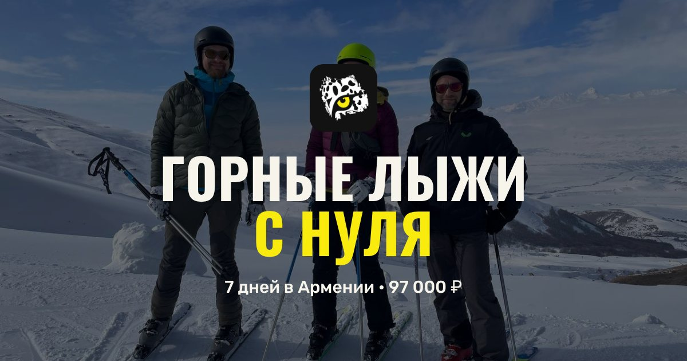
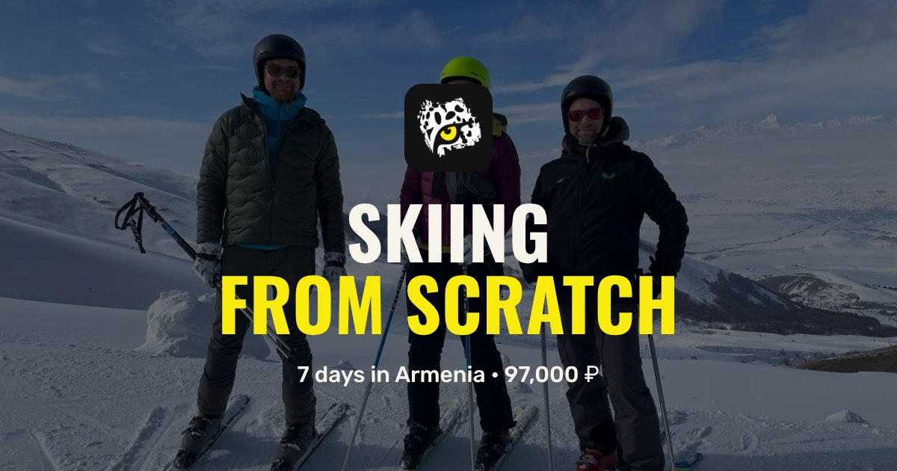
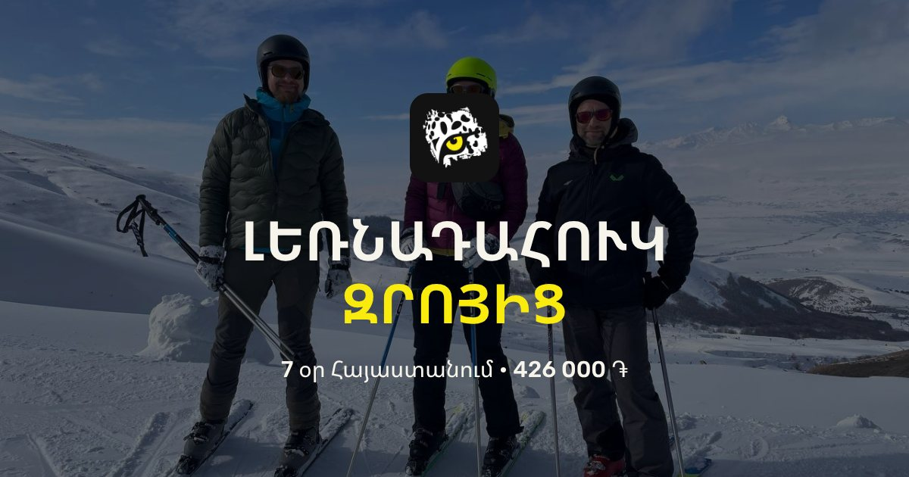
Горные лыжи с нуля · 7 дней · зимаSkiing from scratch · 7 days · winterԼեռնադահուկ զրոյից · 7 օր · ձմեռ
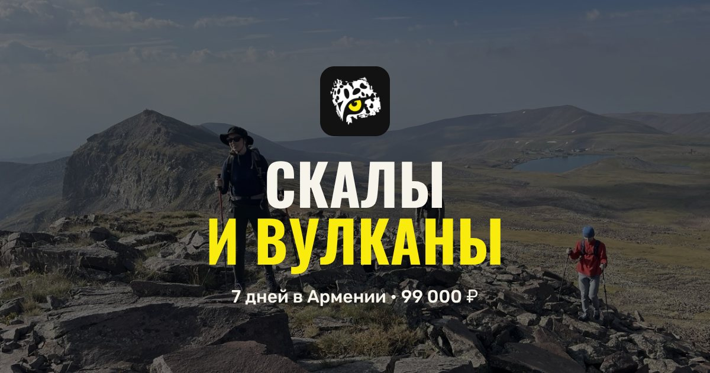
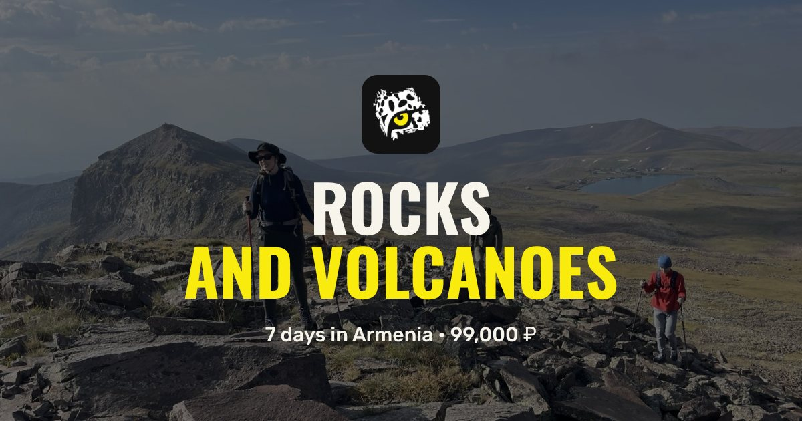
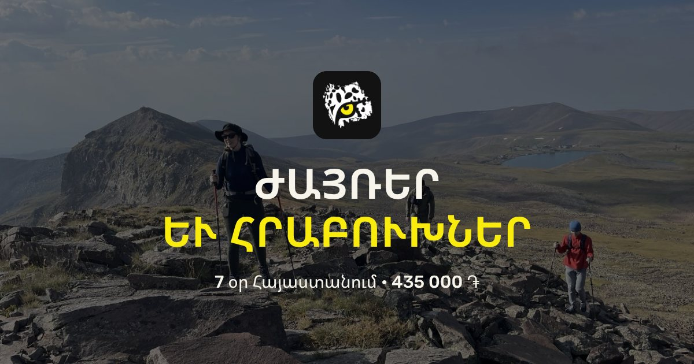
Скалы и вулканы · 7 дней · апрель — ноябрьRocks and volcanoes · 7 days · April — NovemberԺայռեր և հրաբուխներ · 7 օր · ապրիլ — նոյեմբեր
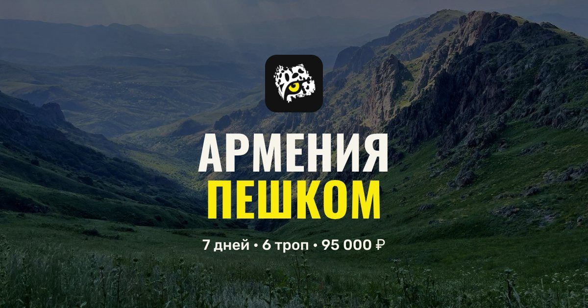
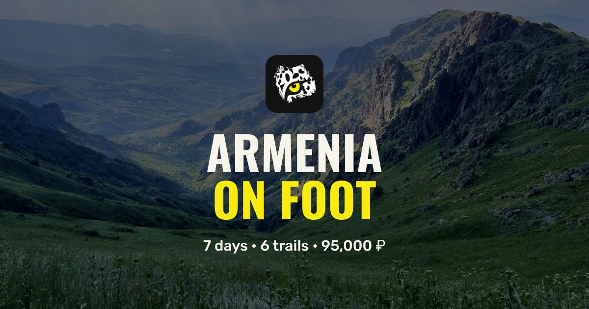
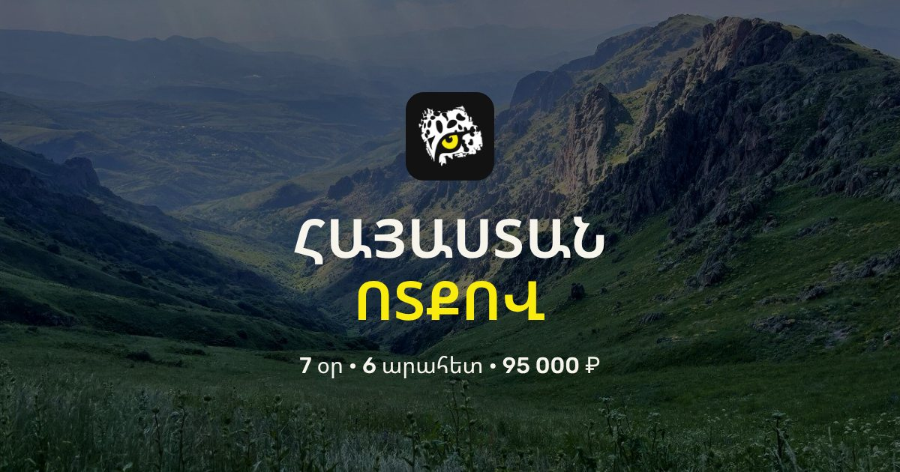
Армения пешком · 7 дней · 95 000 ₽ · май — октябрьArmenia on foot · 7 days · €1,030 · May — OctoberՀայաստան ոտքով · 7 օր · 417 000 ֏ · մայիս — հոկտեմբեր
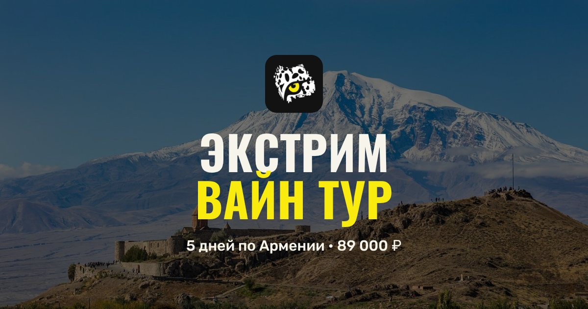
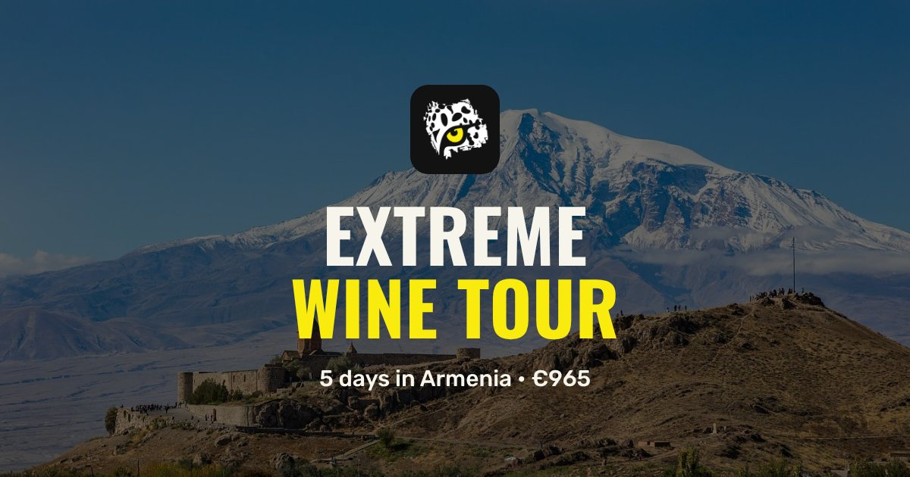
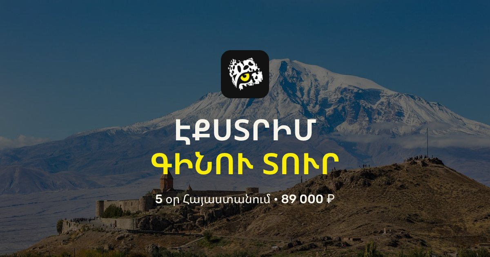
Экстрим вайн тур · 5 дней · 89 000 ₽Extreme wine tour · 5 days · €965Էքստրիմ գինու տուր · 5 օր · 391 000 ֏
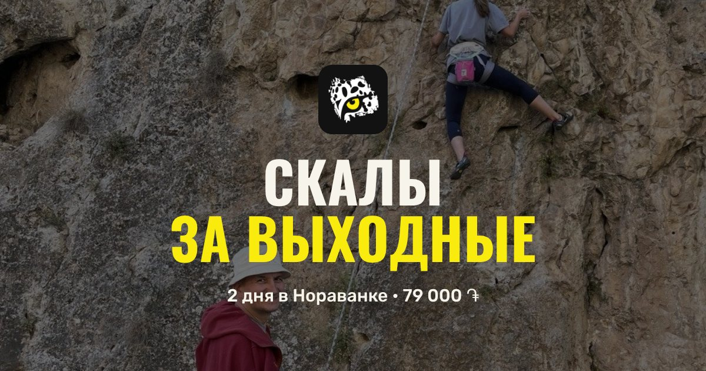
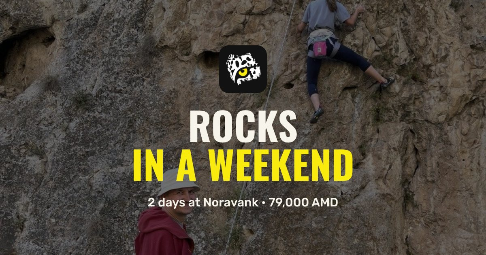
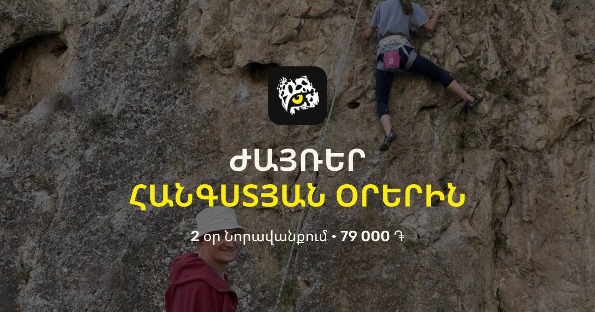
Скалы за выходные · 2 дня из ЕреванаRocks in a weekend · 2 days from YerevanԺայռեր հանգստյան օրերին · 2 օր Երևանից
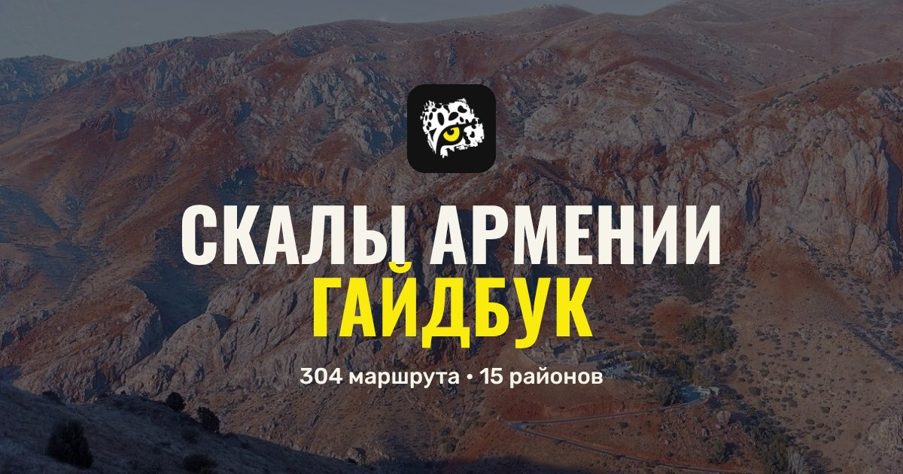
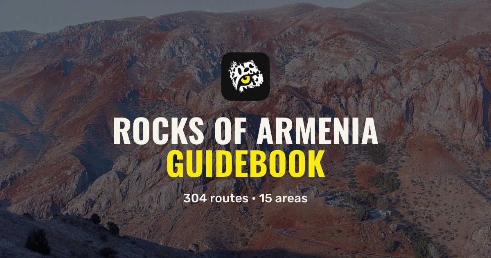
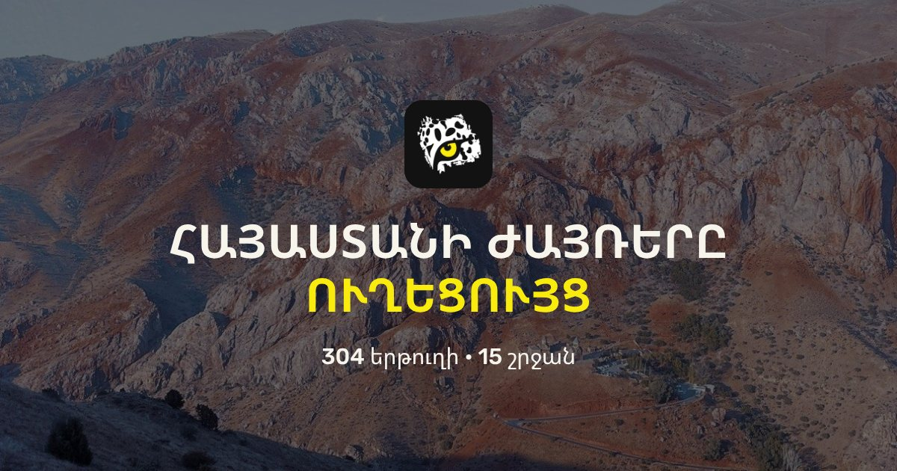
Гайдбук «Скалы Армении» · 304 маршрутаRocks of Armenia guidebook · 304 routes«Հայաստանի ժայռերը» ուղեցույց · 304 երթուղի